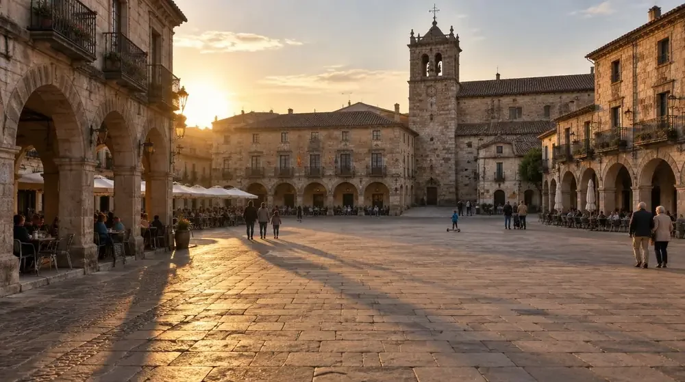

Town guide
Buy · 3-bed flat€320K–€450KCommunal pool, parking, storage
Buy · 4-bed house€560K–€750KChalet, communal pool, parking
Rent · 3-bed flat€1,000–€1,300Per month
Rent · 4-bed house€1,800–€2,500Per month
Commute~45 min train · ~30 min car
VibeSmall-town, close to nature, traditional
Check before decidingAbout these ranges. Patrick’s indicative housing ranges, not a market average. Compare like-for-like homes with current sale listings and current rentals.
Best forFamilies looking for more space and a slower lifestyle, while staying within commuting distance of the city.
At a glance
More space and a Spanish town atmosphere, with school and commute trade-offs to weigh.
- Best fit
- Families looking for more space and everyday Spanish life.
- Main trade-off
- International school options and the shorter commute point towards Tres Cantos.
- Before deciding
- Visit neighbourhoods and schools, then try your door-to-door journey.
Editorial update: 8 October 2026. Fact-check dates are not recorded; confirm changing details with the linked sources.
By Patrick · moved his own family here
Contents Choose a section
We ended up in Colmenar Viejo, drawn by its balance of more affordable housing and good links to the city. Our new-build house cost €605,000 — four bedrooms, a parking space, a basement room, 100m² of garden, and a communal pool. We were torn with Tres Cantos, but we just couldn't get excited about what the flats on offer there gave us for the same money. Colmenar Viejo is a grower: we had our reservations at first, and it's not a town we fell in love with immediately. It's a little rough around the edges. But the schools are excellent, the new neighbourhoods are peaceful and full of other young families who've moved out of Madrid city for more space — and integrating here has been instant.
The vibe
Patrick’s experience and research
For all its rapid growth and modernisation, Colmenar Viejo still has a distinctly "Spanish pueblo" feel. That's not a plus or a minus — it depends entirely on what you're looking for. Speaking Spanish here isn't optional if you want to really integrate, though it's a genuinely great place to learn if you're willing. We're still discovering beautiful walks on the edge of town, with panoramic views taking in both the Madrid Sierra and the city skyline in the same glance.
Housing: buying vs renting
Check before decidingAbout these ranges. Patrick’s indicative housing ranges, not a market average. Compare like-for-like homes with current sale listings and current rentals.
Prices in Colmenar Viejo are rising fast, but it remains significantly and meaningfully cheaper than Tres Cantos. It's also currently one of the most active new-development areas in the region, so there's real choice on the market. If you can, we'd strongly recommend looking for a new build with aerotermia — the underfloor heating and cooling system has been a genuine game-changer for us living in Spain, transforming the summer: you can finally enjoy the heat during the day and still sleep as well as you do in winter.
~€500K budget
3-bed ground-floor flat
Good-sized terrace or garden, communal pool
~€600K budget
Semi-new chalet
Garden, communal pool
There aren't as many off-plan new builds underway as there were a year ago, but plenty of semi-new builds (10 years old or less) come onto the market regularly.
Neighbourhoods
The one area we wouldn't recommend is the town centre itself. It's suffered from years of under-investment, though the town hall is now starting to invest and improve it gradually. Beyond that, there are three newer neighbourhoods worth knowing, plus one older one:
Adelfillas
"The new neighbourhood." Excellent motorway connections, very close to the main town, schools and supermarkets. Quiet and residential — roughly 90% modern flats and houses with large communal areas and pools, full of young families from Madrid. About a 10-minute drive to the train station, with free parking.
La Estación
Similar feel to Adelfillas, but within walking distance of the train station. Benefits from the Samaranch sports centre and a good pizza place, though short on everyday amenities for now — a new shopping centre has been announced. Served by two newer schools, Peñalvento and Héroes Dos de Mayo.
Cerro Tejera
The newest neighbourhood, at the top of the town, often with stunning Sierra views. A short walk to Los Arcos for some. A peaceful, slightly out-of-the-way area, projected to keep growing with a new concertado school scheduled nearby.
Fuentesanta
An older neighbourhood built around a lovely, tree-filled park. Houses here are older — worth considering if you don't mind a renovation. Plenty come with communal pools and shared spaces of their own.
Schools
Check school types and language options in the Check before decidingofficial Madrid school directory; see the admissions process and dates.
Schools here generally have a good reputation. Among the state schools, Antonio Machado, Fuentesanta, Ángel León, Héroes Dos de Mayo, and Federico García Lorca are consistently the preferred choices. On the concertado side, there are two options: Zurbarán and Peñalvento. Peñalvento wins hands-down on facilities — a big, modern, open campus with its own swimming pool — but it's worth knowing it's a Catholic school with a fairly strict environment where Catholic rituals are practiced; not a downside or an upside, just something to factor in. Zurbarán's facilities are older, but the standard of teaching is excellent and the environment is warm and family-oriented.
Facilities & day-to-day life

Placeholder · Parque de los Héroes
Parque de los Héroes — one of several excellent parks for children scattered around town.

Placeholder · El Vivero
El Vivero and Fuentesanta — more green space among the town's better-loved parks.
Placeholder · Los Arcos
Los Arcos has a great atmosphere at weekends — good for a drink and something to eat while the kids play in the square.
Placeholder · town amenities
The town is big enough to have everything you need day to day: several supermarkets, a market, tennis courts, football pitches, swimming pools, restaurants and cafés.
There are also countless walks with genuinely stunning scenery just on the edge of town, and we're still discovering new ones. Colmenar sits at a really nice middle point between nature and city: half an hour one way and you're in Madrid with everything it has to offer; half an hour the other way and you're deep in the Sierra, with beautiful hikes and great old-school mountain restaurants.
Getting around
Journey times depend on your destination and departure. Check your trip in Check before decidingRenfe’s current timetable.
The train is excellent, running the full length of Madrid from Chamartín down to Atocha. The town itself is large and spread out, so in most neighbourhoods you'll rely on the car fairly often. The drive into Madrid is short outside rush hour, but it can more than double at peak times — if that's likely to be your situation, the train is strongly recommended.
Pros & cons
Pros
- Significantly cheaper than Tres Cantos, for meaningfully more space — a garden or a house is realistic here
- One of the most active new-development areas in the region, so real choice on the market
- New builds commonly come with aerotermia — a genuine game-changer for Spanish summers
- Strong schools, both state and concertado
- Genuinely stunning nature and walks on the doorstep, with easy access to both Madrid and the Sierra
- Peaceful, family-dense new neighbourhoods full of others who've made the same move
- Fast, easy integration into the community
Cons
- Retains a real "Spanish pueblo" feel, which won't suit everyone
- Speaking Spanish is genuinely necessary to integrate here — less of an English-speaking bubble than Tres Cantos
- Town centre itself feels under-invested, at least for now
- Spread-out layout means you'll lean on the car more than in Tres Cantos
- Some newer neighbourhoods (like La Estación) feel short on day-to-day amenities for now
- Slower commute than Tres Cantos (~45 min train vs ~28 min)
Is Colmenar Viejo right for you?
You'll love it here if:
- You want noticeably more space and value for your money — a garden and a house are realistic here
- You're happy to speak Spanish day-to-day and want a real, gradual integration
- You want easy access to both Madrid and genuine nature and hiking
- You're comfortable with a town that's still finding its finished shape, rather than fully polished
- You want a strong sense of community among other young families who've made the same move
It might frustrate you if:
- You're hoping for an international, English-speaking bubble — that's not really what's on offer here
- A shorter commute matters more to you than almost anything else
- You'd rather move somewhere fully "finished" than one still investing in its centre and amenities
- You're not willing to learn or use Spanish regularly
But what about our situation?
Your move, unpacked €150
You leave with a shortlist that fits your budget, the schools worth visiting, and your next three steps.
One 60–90 minute video call. Bring your questions about Colmenar Viejo, schools, off-plan buying, mortgages, or anything else — real answers from someone who's actually done this move, not a sales pitch. Need more ongoing support? Ask about that too.
updated · we had this wrong Nothing yet. If something here turns out to be wrong, it gets fixed and listed right here — dated, with what changed.